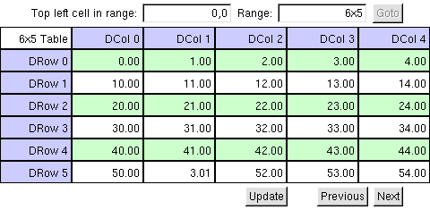
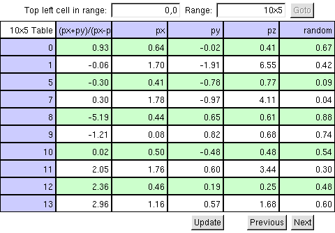
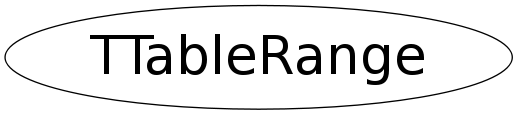

class TTableRange
TGTable
TGTable implements a table widget to display data in rows and columns. The data is supplied by a TVirtualTableInterface.
The table is a TGCanvas to make use of already available viewport functionality and drawing optimizations.
The top left cell in a table has coordinates (0,0)
A TObjArray is used internally to ensure little overhead and fast acces to cells.
If the data source has more rows than the default 50 rows of cells in memory, buttons at the bottom of the table can be used to load the next or previous chunk of data.
At the top of the table, a frame is visible that shows the coordinates of the top left cell currently in memmory in row,column. The amount of rows and columns is also shown in rows x columns. These values can be edited to move to a different area of the data source or to resize the table. Tab will switch between the enties, return will move to the currently entered range and resize the table if needed. Clicking the goto button has the same effect.
A TGTable is created by first creating an appropriate TVirtualTableInterface from the data that needs visualization and then creating the TGTable using this interface.
A simple macro to use a TGTable with a TGSimpleTableInterface:
{kind=link}

{
// Create an array to hold a bunch of numbers
Int_t i = 0, j = 0;
UInt_t nrows = 6, ncolumns = 5;
Double_t** data = new Double_t*[nrows];
for (i = 0; i < nrows; i++) {
data[i] = new Double_t[ncolumns];
for (j = 0; j < ncolumns; j++) {
data[i][j] = 10 * i + j;
}
}
// Create a main frame to contain the table
TGMainFrame* mainframe = new TGMainFrame(0, 400, 200);
mainframe->SetCleanup(kDeepCleanup) ;
// Create an interface
TGSimpleTableInterface *iface = new TGSimpleTableInterface(data, 6, 5);
// Create the table
TGTable *table = new TGTable(mainframe, 999, iface);
// Add the table to the main frame
mainframe->AddFrame(table, new TGLayoutHints(kLHintsExpandX | kLHintsExpandY));
//Update data
data[5][1] = 3.01;
//update the table view
table->Update();
// Layout and map the main frame
mainframe->SetWindowName("Tree Table Test") ;
mainframe->MapSubwindows() ;
mainframe->Layout();
mainframe->Resize() ;
mainframe->MapWindow() ;
return mainframe;
}It is also possible to visualise data from a tree. A simple macro showing the use of a TTreeTableInterface follows.
{kind=link}

{
// Open a root file.
TFile *file = new TFile("$ROOTSYS/tutorials/hsimple.root");
// Load a tree from the file
TNtuple *ntuple = (TNtuple *)file.Get("ntuple");
// Create an interface
TTreeTableInterface *iface = new TTreeTableInterface(ntuple);
// Create a main frame to contain the table
TGMainFrame* mainframe = new TGMainFrame(0, 400, 200);
mainframe->SetCleanup(kDeepCleanup) ;
// Create the table
TGTable *table = new TGTable(mainframe, 999, iface, 10, 6);
// Add the table to the main frame
mainframe->AddFrame(table, new TGLayoutHints(kLHintsExpandX | kLHintsExpandY));
// Set a selection
iface->SetSelection("px > 0.");
// Add a column
iface->AddColumn("(px+py)/(px-py)", 0);
//update the table view
table->Update();
// Layout and map the main frame
mainframe->SetWindowName("Tree Table Test") ;
mainframe->MapSubwindows() ;
mainframe->Layout();
mainframe->Resize() ;
mainframe->MapWindow() ;
return mainframe;
}Function Members (Methods)
public:
| TTableRange() | |
| TTableRange(const TTableRange&) | |
| virtual | ~TTableRange() |
| static TClass* | Class() |
| virtual TClass* | IsA() const |
| TTableRange& | operator=(const TTableRange&) |
| Bool_t | operator==(TTableRange& other) |
| virtual void | Print() |
| virtual void | ShowMembers(TMemberInspector& insp) |
| virtual void | Streamer(TBuffer& b) |
| void | StreamerNVirtual(TBuffer& b) |
Class Charts
{kind=link}
{kind=link}
{kind=link}
{kind=link}
